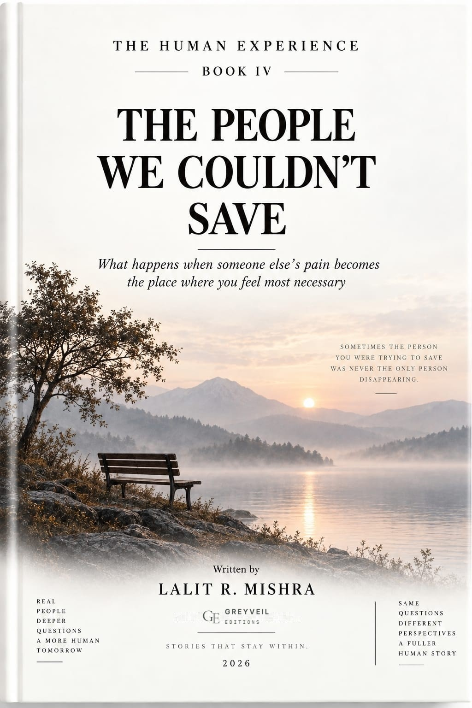
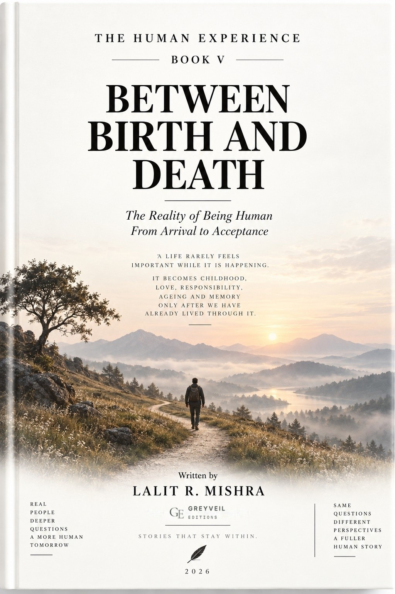
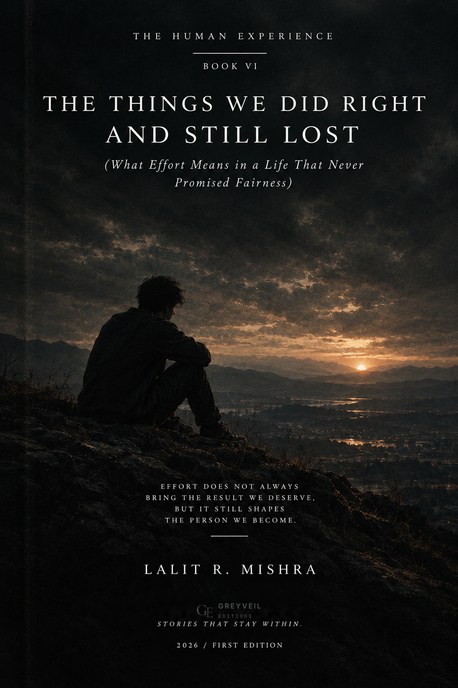
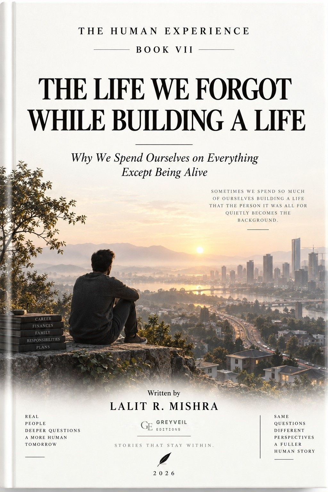

Book I
The People We Couldn't Save
What happens when someone else's pain becomes the place where you feel most necessary.
By Lalit R. Mishra · The Human Experience
The Human Experience / Volume II
Others → Lifetime → Effort → Daily Life
The Human ExperienceThe Lived Experience
Series
Not just the moments we live, but the people, choices, and efforts that shape us.
Books

Book I
What happens when someone else's pain becomes the place where you feel most necessary.
By Lalit R. Mishra · The Human Experience

Book II
The reality of being human, from arrival to acceptance.
By Lalit R. Mishra · The Human Experience

Book III
What effort means in a life that never promised fairness.
By Lalit R. Mishra · The Human Experience

Book IIII
Why we spend ourselves on everything except being alive.
By Lalit R. Mishra · The Human Experience
Navigation
Reading Journey
Start the series with The People We Couldn’t Save, then continue through the four books in order.